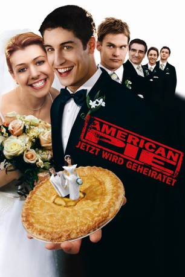

#3692 American Pie 3 - Jetzt wird geheiratet
Alternativ: American Wedding
 
 IMDB-Wertung: 6.3 / 10
IMDB-Wertung: 6.3 / 10  Metascore: 0
Metascore: 0 
Jim will seine große (und erste) Liebe Michelle zu seiner Frau machen. Ein großer und, wie manche seiner Freunde finden, voreiliger Schritt, denn schließlich haben sich die meisten von ihnen noch lange nicht vom wilden Partyleben verabschiedet. Aber wenn schon, dann soll es wenigstens zum unvergesslichen Erlebnis werden. Stifler bringt Jim das Tanzen bei und darf dafür den Junggesellenabend organisieren ... ausgerechnet. Jims Dad spart nicht mit guten Ratschlägen und schießt dabei wie immer übers Ziel hinaus. Und damit nicht genug, wird Michelles umwerfende kleine Schwester Cadence ausgerechnet von Finch und Stifler gleichzeitig belagert, wobei sie diesmal die Rollen tauschen. Stifler gibt den lieben Jungen und Finch den bösen Buben. Ein heilloses Durcheinander bei den Hochzeits-Vorbereitungen ist damit wohl garantiert, und natürlich finden sich wie erwartet gleich reihenweise Fettnäpfchen auf Jims Weg zum Altar.
Jahr: 2003
Dauer: 103 Minuten
FSK: 16
Land: USA Studio: Universal PicturesTonspuren: DTS - ,
Untertitel: Deutsch,
Auflösung: 1080p (1920x816) Größe: 6010 MB
Genre: Komödie
Regisseur: Jesse Dylan
Drehbuch: King Hu
Soundtrack:
Darsteller:
 Jason Biggs als Jim Levenstein
Jason Biggs als Jim Levenstein Seann William Scott als Steve Stifler
Seann William Scott als Steve Stifler Alyson Hannigan als Michelle Flaherty
Alyson Hannigan als Michelle Flaherty Eddie Kaye Thomas als Paul Finch
Eddie Kaye Thomas als Paul Finch Thomas Ian Nicholas als Kevin Myers
Thomas Ian Nicholas als Kevin Myers January Jones als Cadence Flaherty
January Jones als Cadence Flaherty Eugene Levy als Jim's Dad
Eugene Levy als Jim's Dad Molly Cheek als Jim's Mom
Molly Cheek als Jim's Mom Deborah Rush als Mary Flaherty
Deborah Rush als Mary Flaherty Fred Willard als Harold Flaherty
Fred Willard als Harold Flaherty- Angela Paton als Grandma
- Eric Allan Kramer als Bear
- Amanda Swisten als Fraulein Brandi
- Nikki Ziering als Officer Krystal
 Lawrence Pressman als Head Coach
Lawrence Pressman als Head Coach- Antoinette Spolar als Cultured Saleswoman
- Alexis Thorpe als Jennifer
 Reynaldo Gallegos als Leslie Summers
Reynaldo Gallegos als Leslie Summers- Kate Hendrickson als Florist
- Rob Nagle als Floral Assistant
- Corinne Reilly als Caterer
 Loren Lester als Celebrant
Loren Lester als Celebrant Justin Isfeld als Justin
Justin Isfeld als Justin John Cho als John
John Cho als John- James Reese als Concierge
- Patrick Gallo als Dress Salesman
- Logan Bartholomew als Football Guy
 Jennifer Coolidge als Stifler's Mom
Jennifer Coolidge als Stifler's Mom- Willam Belli als Butch Queen
- Frank Roessler als Gay Bar Back
- Michael Coleman als Maitre D'
- Golde Starger als Elderly Woman in Restaurant
- Max Goudsmit als Football Guy at Altar
- Neal Flaherty als Football Team Captain
- Julie Payne als Mrs. Zyskowski
- Peter Reinert als Bartender
- Peter Gaddis als Football Celebrant
- Chris Bender als Scared Guy in Bathroom
- Tony Gatto als Elderly Man With Walker
- Ryan Rubin als Gay Male
- Brad Hammer als Gay Male
Datei: X:\4-Tetralogie(A-K)\American Pie\American Pie 3 - Jetzt wird geheiratet (2003, FSK16, 1920x816).mkv seit 20.05.2016
Festplatte: HD Collection-3(N-Z)-6(A-Z)
 Es gibt insgesamt 7 Filme in der Gruppe '4-Tetralogie(A-K)\American Pie'
Es gibt insgesamt 7 Filme in der Gruppe '4-Tetralogie(A-K)\American Pie'